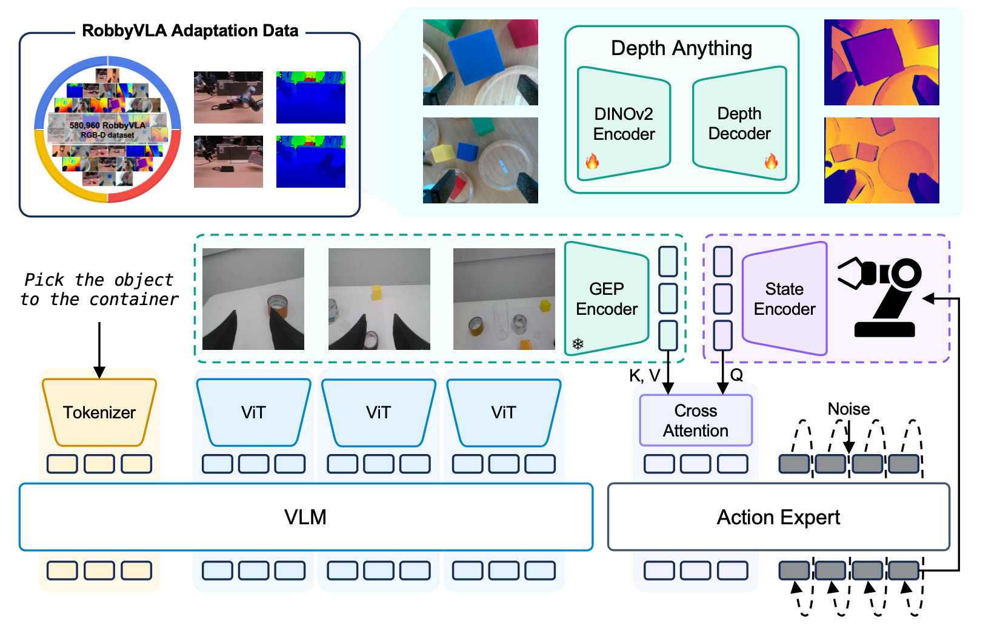
GeoAlignBeyond Semantics with State-Guided Spatial Alignment in VLA Models
Robot-state-guided spatial alignment brings geometry into VLA policies for precise manipulation.
ROBOT LEARNING & EMBODIED INTELLIGENCE
I study how robots understand the world and turn that understanding into action.
I am a Ph.D. student at Tongji University and Shanghai Innovation Institute. My research centers on three connected directions: geometry-aware vision-language-action models, humanoid WAM, and humanoid locomotion and control. Across these directions, I use reinforcement learning and real-world evaluation to study reliable robot behavior.
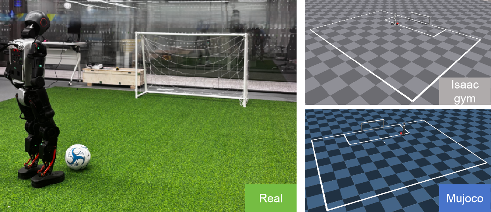
Booster T1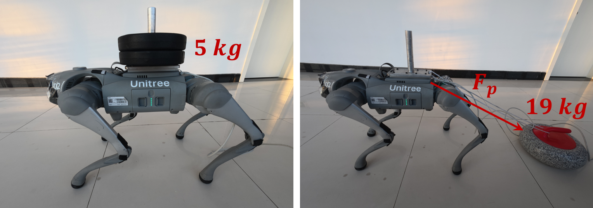
Unitree Go2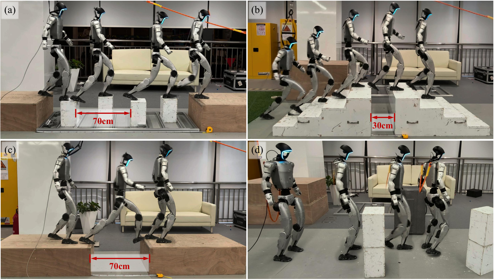
Unitree G1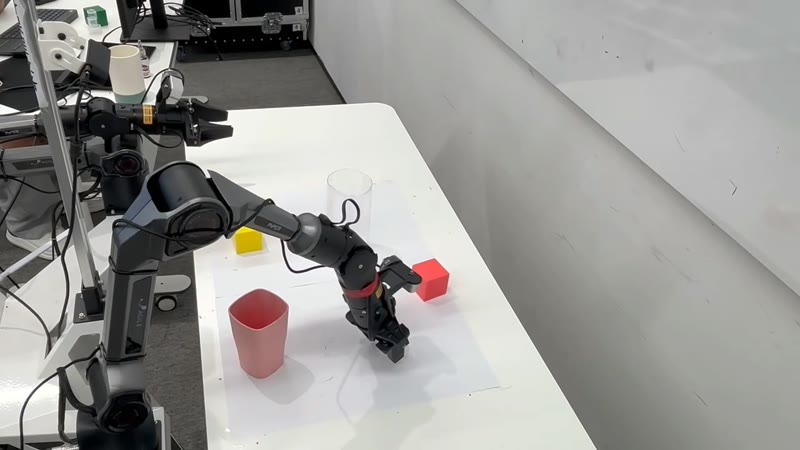
ALOHABooster T1 · Unitree G1, Go2, Go2W & B2W · HONOR quadrupeds · ALOHA
LATEST UPDATES
RESEARCH
Follow a research thread.
Explore connections across robot perception, control, and learning.
8 publications
No papers match these filters.

Robot-state-guided spatial alignment brings geometry into VLA policies for precise manipulation.
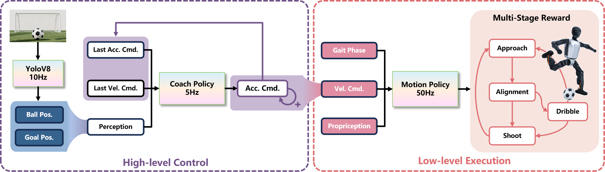
Visual decision-making and reusable motion skills connect approaching, aligning, dribbling, and kicking.
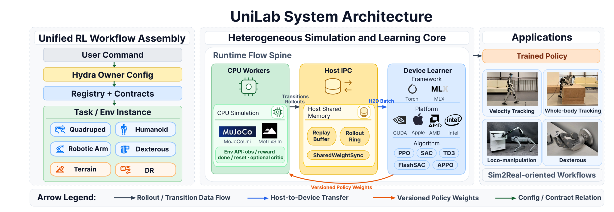
Decoupling CPU simulation and GPU learning to build an efficient, cross-platform training system.
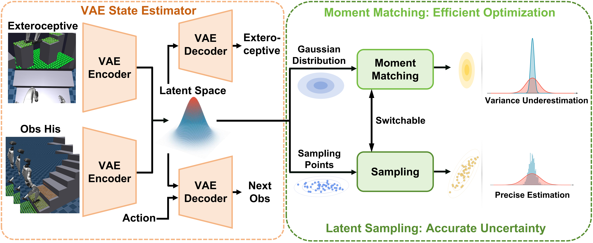
Distribution-aware optimization for more stable policy learning with stochastic latent representations.
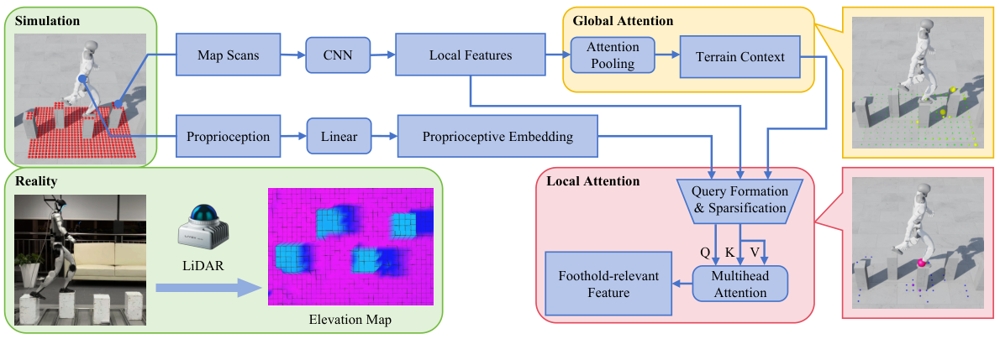
Separating global terrain context and state-conditioned foothold attention for perceptive locomotion.
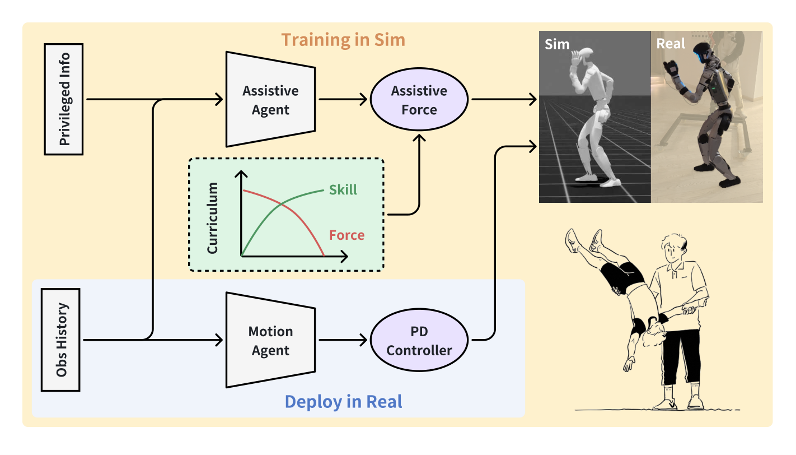
Adaptive assistance guides motion learning and gradually gives way to independent robot skills.
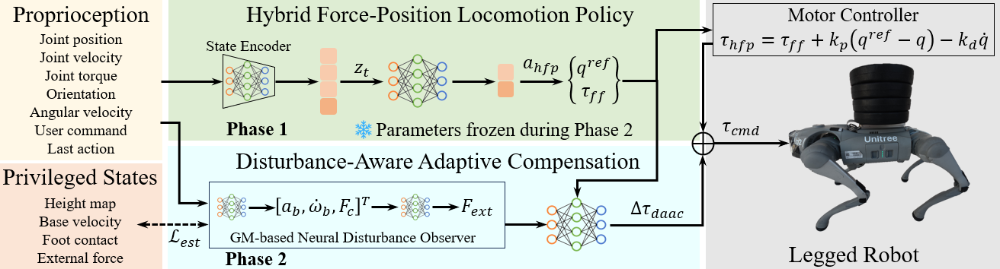
Combining position and torque control with disturbance estimation for resilient legged locomotion.
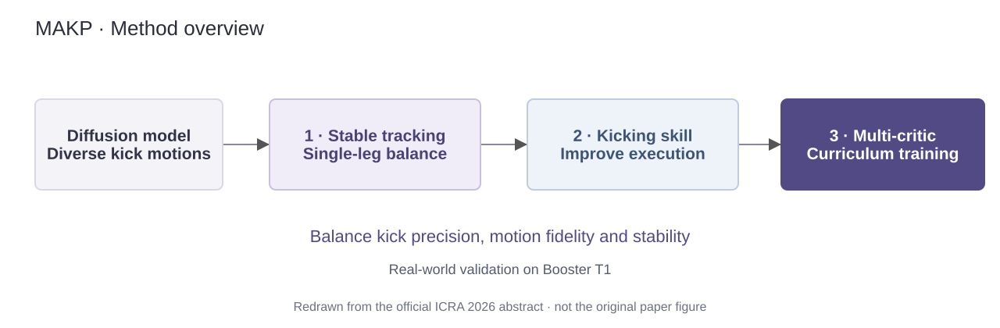
Method overview · redrawn from the official ICRA abstract
Motion generation and staged policy learning balance kicking accuracy, motion similarity, and stability.
HANDS-ON RESEARCH
PERCEPTION & CONTROL
I led a four-person team working on wheel-legged control, state estimation, depth-camera perception, LiDAR elevation maps, and terrain fusion.
REAL-WORLD EVALUATION
Robot development on Unitree Go2, Go2W and B2W, and HONOR quadruped platforms. My hands-on work also spans motion-control validation, deployment, task evaluation, and failure localization across Booster T1, Unitree G1, and ALOHA.
CONTACT
For conversations about robot learning
and embodied intelligence.
Scan with WeChat to connect.